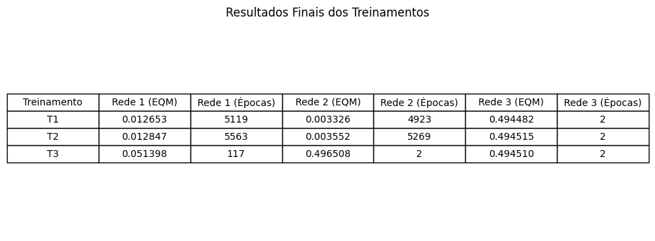
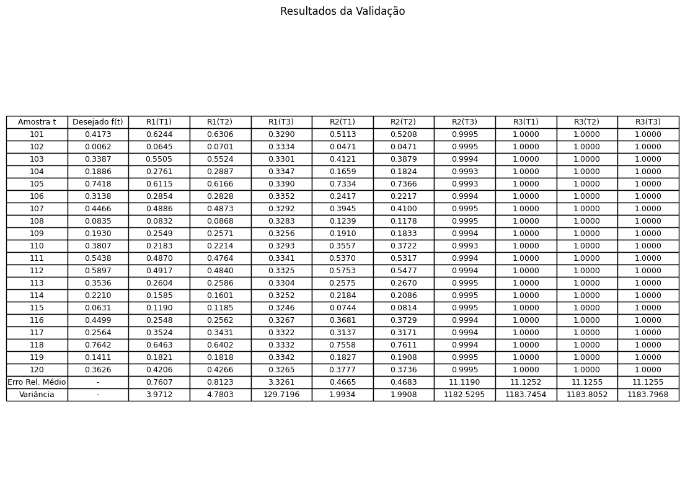
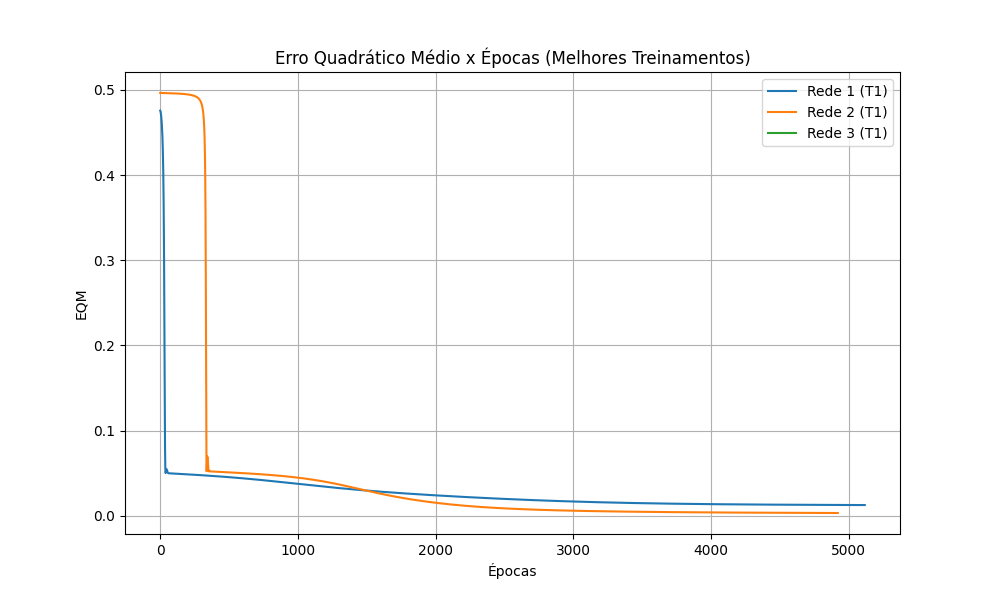
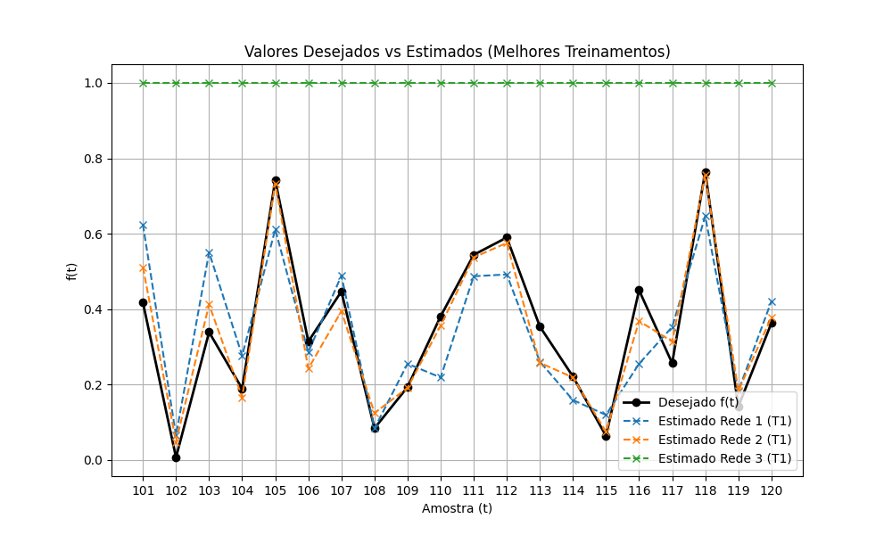

Resultados finais de 3 treinamentos para cada uma das três topologias de rede, contendo o Erro Quadrático Médio (EQM) final e o número de épocas percorridas até a convergência baseada na precisão estabelecida (0.5x10-6).

Validação das redes candidatas baseada nas amostras do conjunto de testes ($t=101$ a $120$), exibindo os valores previstos contra os desejados, bem como o Erro Relativo Médio geral e a respectiva Variância obtida.

O acompanhamento da queda do Erro Quadrático Médio em função das épocas para o melhor treinamento verificado em cada uma das três topologias.

Demonstração visual do desempenho dos melhores modelos treinados ao tentar replicar a curva dos valores desejados da amostra de validação.

Topologia Escolhida: Rede 2 (10 entradas, 15 neurônios na camada oculta)
Treinamento: T1
Justificativa: Baseado nas análises do Erro Relativo Médio nos dados de validação, a Rede 2 apresentou a maior capacidade de generalização e os menores erros de predição (em torno de 0.46) quando operando em dados não vistos no treinamento. As outras redes apresentaram underfitting ou overfitting na representação da série.
Características e Vantagens:
O algoritmo RProp baseia-se exclusivamente no sinal do gradiente, e não em sua magnitude,
para realizar a atualização de pesos, adaptando independentemente o tamanho do passo (step size)
para cada conexão da rede.
Características e Vantagens:
O algoritmo de Levenberg-Marquardt aproxima as equações do método de Newton combinando-as com o
Gradiente Descendente sem calcular diretamente as derivadas secundárias (usando o Jacobiano).